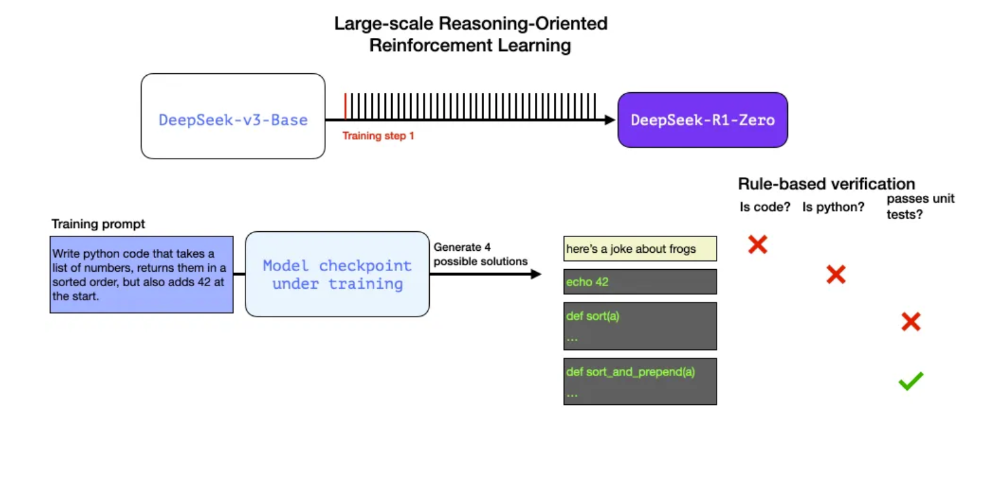

✨ Post training LLMs: The art of Reinforcement Learning” ✨
Current state of the art LLMs are trained in different stages, which are:
- Pre-training: process where the LLM scratches over a large amount of data using next-token prediction.
- Supervised FineTunning (SFT): where next-token prediction training is done through a supervised set of high-quality completions.
- Reinforcement Learning from Human Feedback (RLHF): where Reinforcement Learning (RL) is used to train LLMs over human preference data.
- Reinforcement Learning from Verifiable Rewards (RLVR): where RL is used on verifiable tasks (i.e. tasks where the ground throught is know a priori) and rewards can be derived from rules or heuristics.
RLHF and RLVR are alignment techniques in order to capture human preferences. For example in RLHF, the goal is to learn a policy by maximizing some reward from the environment. In RLHF the reward model is a proxy of the environment - i.e. LLM generates a completion over a set of prompts and compute the reward of these completions and use the rewards to derive a policy update (i.e. pdate of LLM´s parameters) with an RL optimizer.
RL Optimizers
The RL optimization function is a maximization of the reward while minimizing the KL Divergence of the model with respect to a reference model (initial checkpoint of the model). KL Divergence or Kullback-Leibler divergence (introduced in my other blog here XXX) is a statistical measure used in machine learning to quantify the difference between two probability distribution.
PPO and GPRO are example of on-line policy updates techniques. While DPO is an example of off-line technique (a.k.a. direct alignment ).
PPO (Proximal Policy Optimization)
Initially RLHF models were finetunned using PPO .
DPO( Direct Preference Optimization)
DPO become popular due to its offline training capabilities. It can be used with verified rewards or rewards models
GRPO (Group Relative Policy Optimization).
GRPO (Group Relative Policy Optimization), unlike traditional RL methods does not rely on external evaluators (critics) to guide learning. GRPO optimizes the model by evaluating groups of responses relative to one another.
GRPO mainly uses 2 reward functions:
accuracy rewards: which evaluates whether the response is correct. (e.g. math problem with deterministic results and final answer, unit tests for code as accuracy computation).
format rewards: which enforces thinking process by rewarding model if it separates the “thinking” and the “answer” parts by
tags.
The figure below by Jay Alammar, provides an excellent illustration example of such RL technique using reward signals. More information on GRPO on the paper DeepSeekMath: Pushing the Limits of Mathematical Reasoning in Open Language Models.

üí° The ‚Äúaha moment‚Äù :
The model self-evolution through RL indicates its capability to reflect by revisiting and reevaluating previous steps and exploring alternative approaches through problem solving by using extended test-time computing during reasoning.
“The self-evolution process of DeepSeek-R1 is fascinating as it demonstrate how RL can drive the model to improve its reasoning capabilities autonomously. By initiating RL directly from the base model, the author could monitor model progression without the influence of the supervised fine -tuning stage - indicating how model evolves overtime and its ability to handle complex reasoning tasks by leveraging extended test-time computing.”
In addition to RL, DeepSeek-R1-Zero can be further augmented through the application of majority voting.
üìù Rejection sampling and SFT
Rejection sampling and SFT is applied using data from other domains to enhance the model’s capability in writing, role-playing and other general-purpose tasks. For reasoning data this is done using generative reward model with ground-truth and DeepSeek-v3 as a judge (i.e. 600k reasoning training samples in total). For non-reasoning data such as writing, factual QA, self-cognition and translation, the DeepSeek-v3 pipeline is used including reuse of portions of the SFT dataset of DeepSeek-v3 (200k training samples in total).
üåê RL for all scenarios
RL is used to further align the model with human preferences through a secondary RL stage to improve model helpfulness and harmlessness. Rule-based rewards is used to guide the learn process in math, code and logical reasoning domains, using the same distribution of preference pairs and training prompts used by DeepSeek-v3 pipeline.
üß™ Distilled Models:
Fine-tuning is used as a distillation method to empower small models with reason capabilities like DeepSeek-R1. DeepSeek released 6 dense models (1.5B - 70B range) based on Qwen/Llama and distilled from DeepSeek-R1 using 800k curated samples. For distilled modes only SFT is applied (no RL stage included).
üîç Other interesting points:
- Despite advocating that model distillation are both economical and effective methods, the DeepSeek’s authors highlight that advancements beyond the boundaries of intelligence may still require powerful base models and large-scale RL.
- Monte Carlo Tree Search (MCTS), which is used by AlphaGo and AlphaZero, has also been proposed as a technique to enhance test-time compute scalability. But DeepSeek’s authors has seen scaling limitation during training as token generation presents an exponentially large search space compared to chess.
- DeepSeek-v3-base is used as the base model for DeepSeek-R1 and follows a Mixture of Expert (MoE) architecture. It has 671 billion parameters where 37 billion is activated for each token. See my previous post Understanding Mixture of Expert for additional information on MoE architectures.
- DeepSeek-v3-base uses Multi-Head Latent Attention (MLA) as its attention mechanism. MLA proposes a low-rank joint compression for the attention keys and values in order to reduce KV (Key-Value) cache during inference. See the Multi-Head Latent Attention section in my post The Power of Focus: Understanding Attention Mechanisms in LLM for more information and references.
üöÄ Conclusion: The Future Implications of DeepSeek-R1 in AI
DeepSeek-R1 shows how large-scale Reinforcement Learning (RL) can improve reasoning without extensive supervised fine-tuning (SFT). By using multi-stage training and cold-start data, DeepSeek-R1 matches the performance of top models.
Key points highlighted in this article include:
- Multi-stage Training: Combining cold-start data, RL, and SFT to enhance the model.
- Reinforcement Learning: Using Group Relative Policy Optimization (GRPO) to improve responses.
- Reasoning Tokens: Generating “thinking tokens” to boost reasoning.
- Self-Evolution: The model improves itself through RL.
- Distilled Models: Smaller models gain similar reasoning abilities through fine-tuning.
DeepSeek-R1’s success highlights the potential of RL and reasoning tokens for creating smarter AI. This model opens new possibilities for AI applications in various fields, from language processing to decision-making.
üìöReferences:
- DeepSeek-R1 Technical Report
- DeepSeek-R1: Incentivizing Reasoning Capability in LLMs via Reinforcement Learning by DeepSeek-AI
- The Math Behind DeepSeek: A Deep Dive into Group Relative Policy Optimization (GRPO) by Ahmed
- The Ilustrated DeepSeek-R1 by Jay Alammar
- Quiet-STaR: Language Models Can Teach Themselves to Think Before Speaking
[!TIP]
For a fully open reproduction of DeepSeek-R1, check Open R1 project by Hugging Face.
By the way you can use the DeepSeek’s AI assistant app in the Apple App Store.